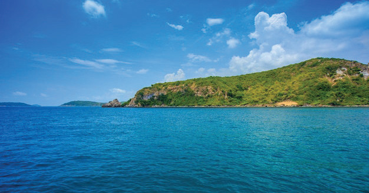

Open waters
Open waters refer to natural aquatic environments such as lakes, rivers, seas, and oceans, which serve as venues for recreational swimming, endurance training, and competitive events, Figure 3.2. Unlike swimming pools, open waters do not have artificial boundaries, making them more challenging due to varying water conditions such as currents, tides, and temperature fluctuations. Open water swimming is commonly used in triathlons, long-distance races, and lifesaving training, requiring swimmers to develop advanced skills in navigation, endurance, and safety awareness.

Swimming equipment
Swimming equipment refers to the tools used in training, recreation, and competitions to ensure safety, enhance performance, and improve technique. The equipment includes swimsuits, goggles, swim caps, kickboards, pull buoys, fins, hand paddles, and earplugs.
Swimsuit
A swimsuit is a clothing designed to be worn while swimming or participating in water-based activities. A proper swimsuit should provide comfort, flexibility, and ease of movement in the water. It is typically made of materials like polyester, which provides a snug fit and minimizes drag. Streamlined swimsuits are used to reduce water resistance, enhancing speed and efficiency in the water, Figure 3.3.
SPORTS STUDIES FORM TWO.indd 76
9/17/25 9:54 AM